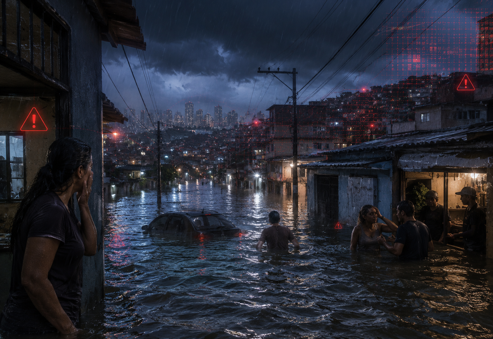
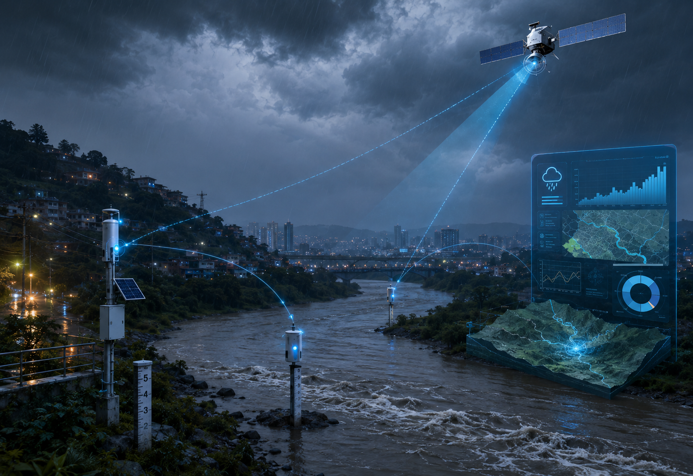
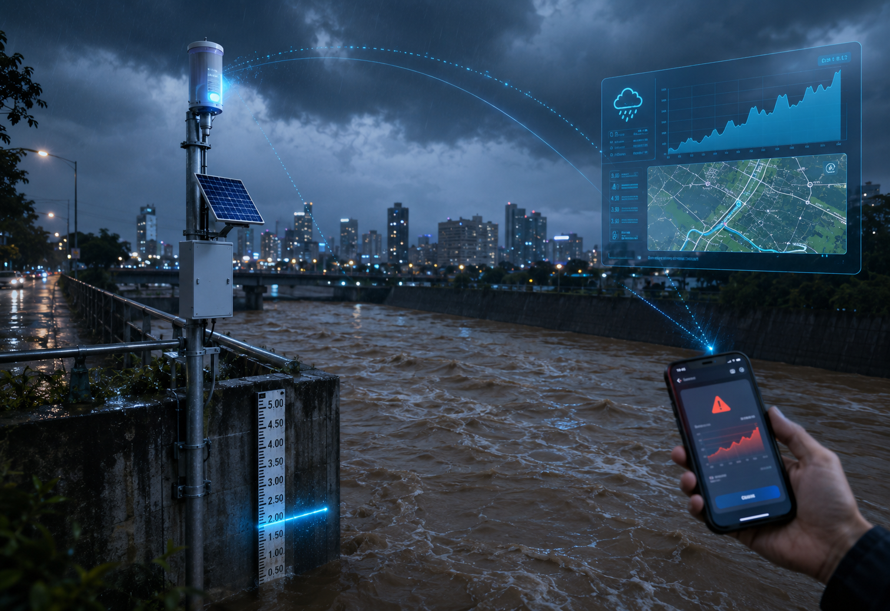

Sistema de alerta de enchentes com satélites, sensores locais e comunicação rápida.
Baixe o appO sistema acompanha chuva, rios e áreas de risco em tempo real.
Satélites ajudam a observar clima, nuvens e mudanças ambientais.
Moradores e cidades recebem avisos antes do risco aumentar.
Muitas cidades recebem alertas tarde, quando ruas e casas já estão alagadas.
O atraso aumenta riscos, prejuízos e dificulta a atuação da Defesa Civil.


A tecnologia combina satélites, sensores de água e dados climáticos locais.
As informações indicam o risco e colaboram com alertas quando necessário.
Prevenir enchentes, salvar vidas e apoiar decisões rápidas em áreas vulneráveis.
Avisar moradores e prefeituras com antecedência para minimizar os danos.
Reduzir danos antes da água subir.
Informar moradores com clareza.
Moradores de áreas de risco, Defesa Civil, prefeituras e centros de monitoramento.
Quanto maior o alcance da informação, melhor.
Alertas rápidos reduzem perdas materiais e aumentam a segurança das famílias.
A cidade ganha dados para planejar obras, rotas e ações emergenciais.
Avisos antecipados protegem casas e comércios.
Sem malefícios ao meio ambiente.

Sensores acompanham rios e enviam dados para o painel da cidade.
Quando o risco aumenta, o sistema exibe alerta e orienta rotas seguras.
Preencha os dados para simular o envio de uma área monitorada.
Teste seus conhecimentos sobre enchentes, sensores e tecnologia espacial.
João 571358
Rayka 573888
Vinicius 570710
Alice 569069
Gabriel 569280